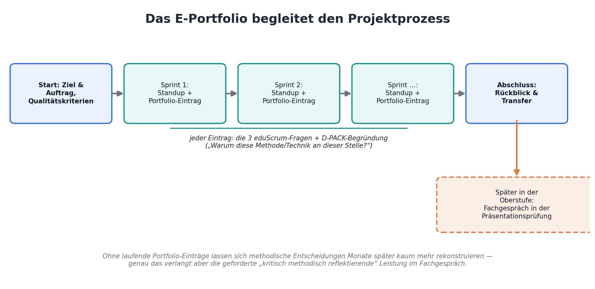
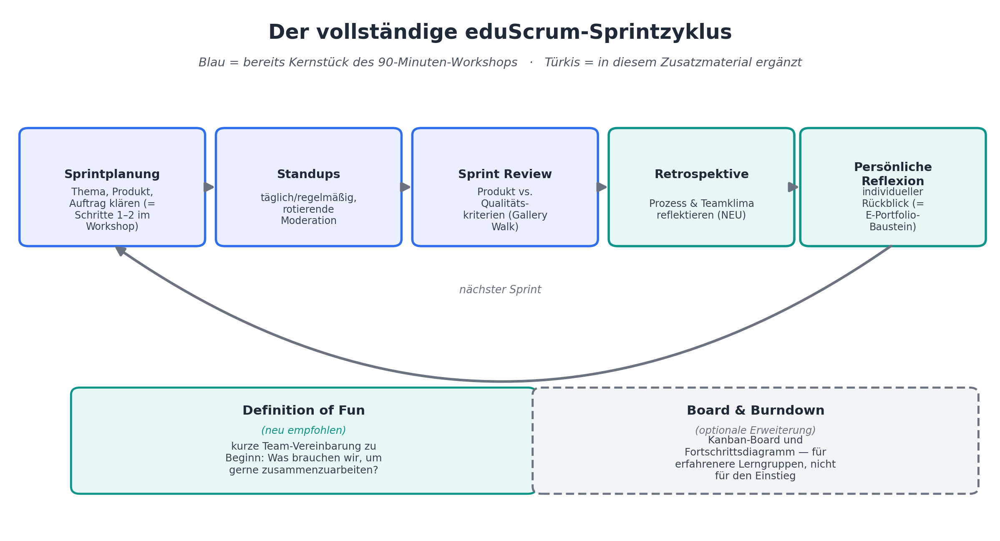

Optionales Vertiefungsmaterial
Weiterführende Unterlagen, die im 90-minütigen Workshop nicht zwingend eingesetzt werden, aber bei Bedarf ergänzt werden können.
Die Oberstufenreform NRW verlangt in der Präsentationsprüfung eine „kritisch methodisch reflektierende" Leistung. Diese Reflexionsfähigkeit lässt sich nicht erst am Ende der Oberstufe einfordern — sie muss vorher aufgebaut werden. Ein projektbegleitendes E-Portfolio macht methodisch-technische Entscheidungen (D-PACK) und den eigenen Lernprozess über die Zeit sichtbar und rekonstruierbar.
Kein formaler Prüfungsbestandteil laut APO-GOSt — das Portfolio ist eine didaktische Brücke, kein vorgeschriebenes Dokument.

Der Workshop nutzt Standup, Produktbacklog und die Doppelrolle Scrum Master/Product Owner als Kernstück. Die didaktische Literatur zu eduScrum beschreibt darüber hinaus weitere Elemente des vollständigen Sprintzyklus, die den Einstieg vertiefen oder als nächsten Ausbauschritt sinnvoll ergänzen können.
